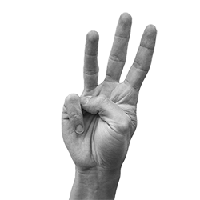

Legenda
Dx = mano destra
Sx = mano sinistra
Po = pollice
In = indice
Me = medio
An = anulare
Mi = mignolo
00 = pugno chiuso
Europa
01
02
03
04
05 
Dita sollevate nel contegggio fino al numero 10:
No. dita sollevate
01 PoDx
02 PoDx InDx
03 PoDx InDx MeDx
04 PoDx InDx MeDx AnDx
05 PoDx InDx MeDx AnDx MiDx
06 PoDx InDx MeDx AnDx MiDx PoSx
07 PoDx InDx MeDx AnDx MiDx PoSx InSx
08 PoDx InDx MeDx AnDx MiDx PoSx InSx MeSx
09 PoDx InDx MeDx AnDx MiDx PoSx InSx MeSx AnSx
10 PoDx InDx MeDx AnDx MiDx PoSx InSx MeSx AnSx MiSx
Americhe
01
02
03 
04
05 
Dita sollevate nel contegggio fino al numero 10:
No. dita sollevate
01 InDx
02 InDx MeDx
03 InDx MeDx AnDx
04 InDx MeDx AnDx MiDx
05 InDx MeDx AnDx MiDx PoDx
06 InDx MeDx AnDx MiDx PoDx InSx
07 InDx MeDx AnDx MiDx PoDx InSx MeSx
08 InDx MeDx AnDx MiDx PoDx InSx MeSx AnSx
09 InDx MeDx AnDx MiDx PoDx InSx MeSx AnSx MiSx
10 InDx MeDx AnDx MiDx PoDx InSx MeSx AnSx MiSx PoSx
Medio oriente
01
02
03  04
04  05
05 
04
05 Dita sollevate nel contegggio fino al numero 10:
No. dita sollevate
01 MiDx
02 MiDx AnDx
03 MiDx AnDx MeDx
04 MiDx AnDx MeDx InDx
05 MiDx AnDx MeDx InDx PoDx
06 MiDx AnDx MeDx InDx PoDx MiSx
07 MiDx AnDx MeDx InDx PoDx MiSx AnSx
08 MiDx AnDx MeDx InDx PoDx MiSx AnSx MeSx
09 MiDx AnDx MeDx InDx PoDx MiSx AnSx MeSx InSx
10 MiDx AnDx MeDx InDx PoDx MiSx AnSx MeSx InSx PoSx
Giappone (personale)
01
02
03
04
05
Dita sollevate nel contegggio fino al numero 10:
No. dita sollevate
01 InDx MeDx AnDx MiDx
02 MeDx AnDx MiDx
03 AnDx MiDx
04 MiDx
05 Dx00
06 MiDx
07 AnDx MiDx
08 MeDx AnDx MiDx
09 InDx MeDx AnDx MiDx
10 InDx MeDx AnDx MiDx PoDx
Africa occidentale
01
02
03
04
05
Dita sollevate nel contegggio fino al numero 10:
No. dita sollevate
01 PoDx InDx MeDx AnDx
02 PoDx InDx MeDx
03 PoDx InDx
04 PoDx
05 Dx00
06 Dx00 PoSx InSx MeSx AnSx
07 Dx00 PoSx InSx MeSx
08 Dx00 PoSx InSx
09 Dx00 PoSx
10 Dx00 Sx00